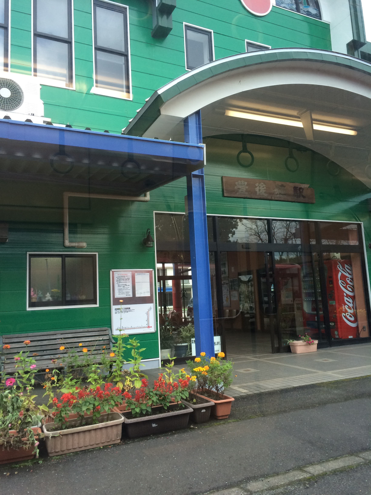
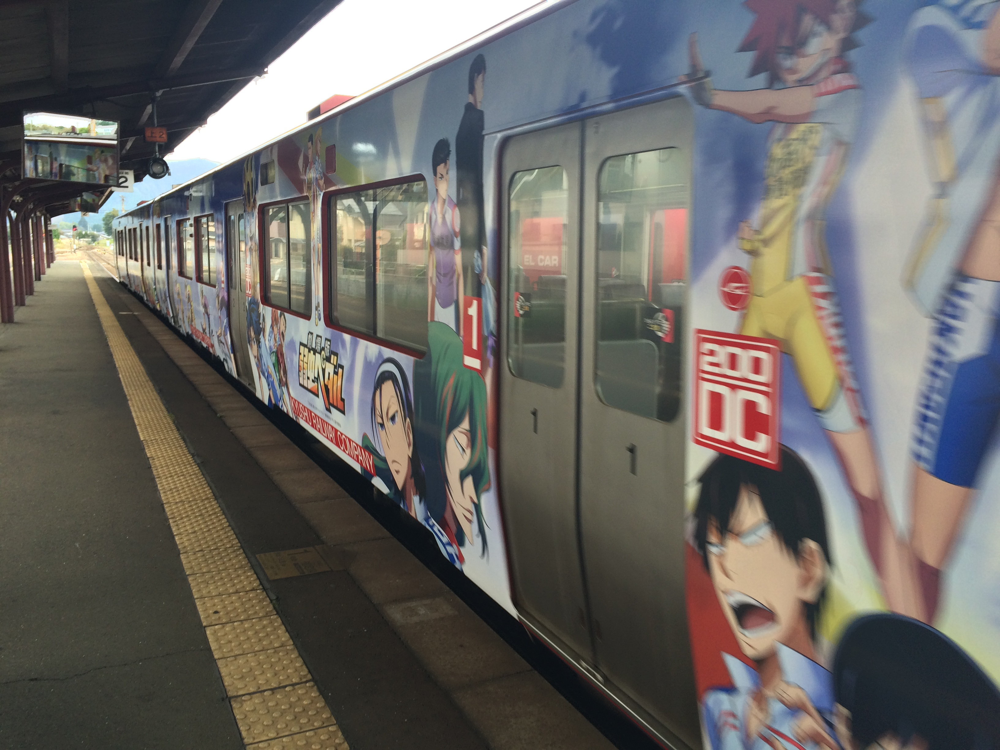
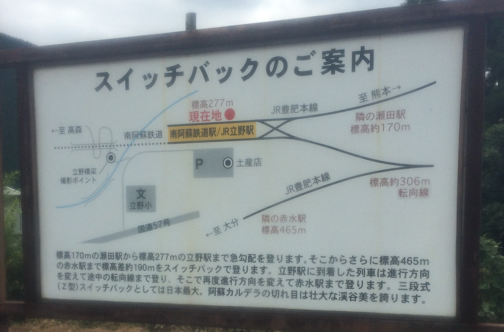
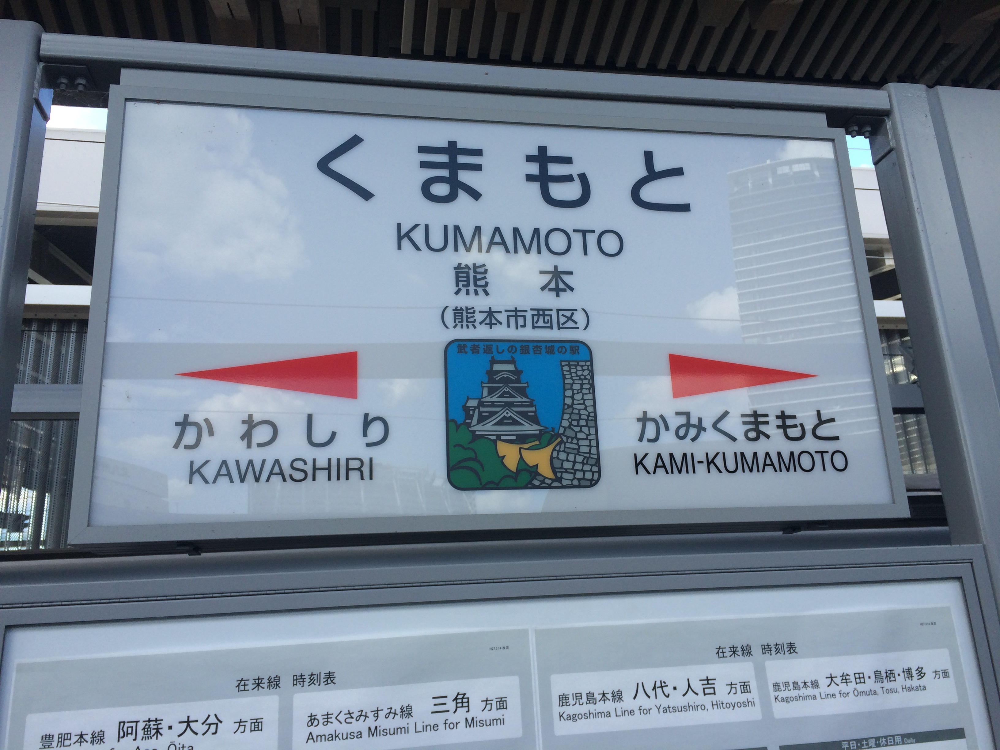
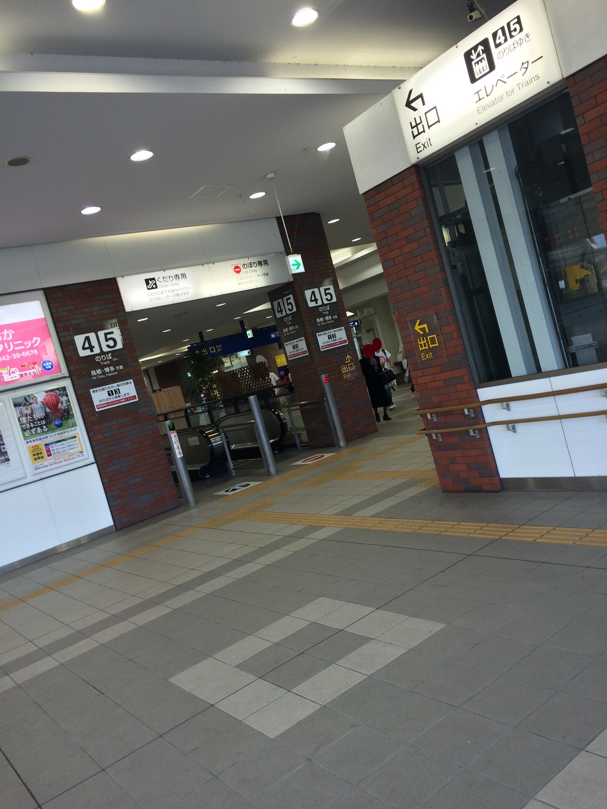
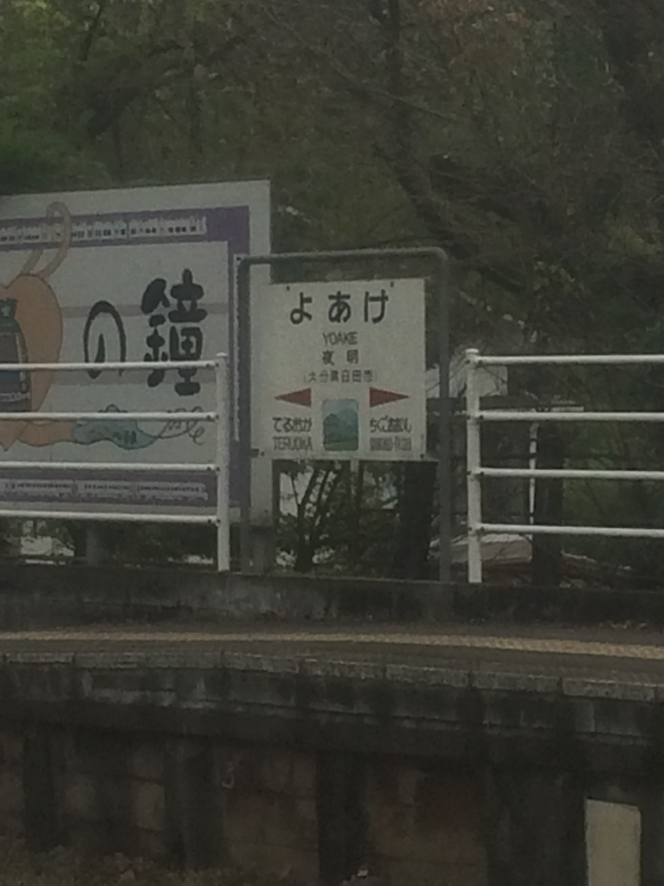

おはようございます．今日は豊肥本線から熊本県に行き，福岡から久大本線で帰ってくるルートです．
ここが豊肥本線の大分県最西端の駅です．この建物の中には図書館が入っていて，地元の人達の憩いの場になっています．
熊本県阿蘇市の宮地駅で乗換です．上の画像は某自転車アニメとコラボした車両で，期間限定でした． ここから阿蘇山を左に臨みながら阿蘇市街を駆け抜けます．
ここは立野駅です．九州で唯一スイッチバックをする駅です．
熊本駅につきました．高架化の最中で，一部の路線だけ高架駅になっていました．
熊本県の荒尾駅で快速列車に乗り換えて，久留米駅に着きました． この駅の内装はとても良いと思います． 久留米駅から久大本線に乗換です．
久大本線で大分最西端の夜明駅です．ここで日田彦山線と合流して日田駅に向かいます． 画像を拡大しているため画質が悪いです．
ここから先は，1日目と同じなので割愛させていただきます．結局1日目と同じくらいの時間に到着しました． それでは，最終日の3日目まで...
今回通った路線：豊肥本線，鹿児島本線，久大本線
乗った車両：時系列順にキハ200系，キハ200系，815系，813系，キハ200系
詳細が気になる方は資料一覧へ